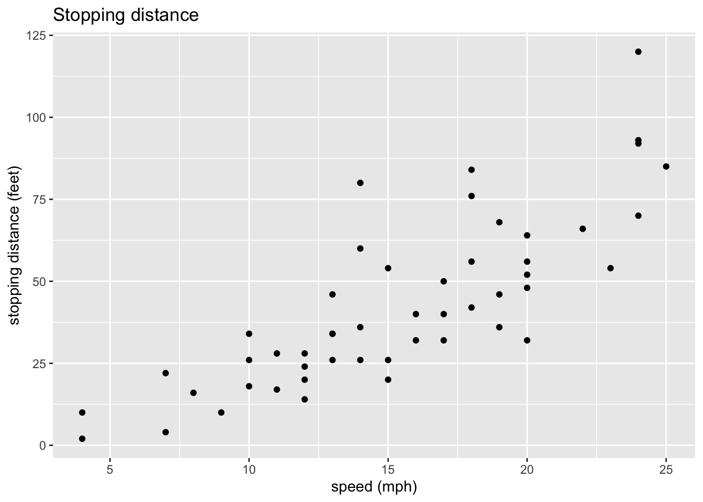

3 Guidelines for graphics
I’ve attached a PDF checklist for creating good data visualizations, reated by Nick Ulle of UC Davis Datalab. Download it and keep a copy around - it’s an excellent guide. I’m going to go over how the checklist translates into the grammar of graphics.
3.1 Data
You can’t have a data visualization without data! ggplot2 expects that your data is tidy, which means that each row is a complete observation and each column is a unique feature. In fact, ggplot2 is part of an actively developing collection of packages called the tidyverse that provides ways to create and work with tidy data. You dont have to adopt the entire tidyverse to use ggplot2, though.
3.2 Feature types
The first item on the list is a table of options for geometries that are commonly relevant for a given kind of data - for instance, a histogram is a geometry that can be used with a single numeric feature, and a box plot can be used with one numeric and one categorical feature. - Should it be a dot plot? Pie plots are hard to read and bar plots don’t use space efficiently (Cleveland and McGill 1990; Heer and Bostock 2010). Generally a dot plot is a better choice.
3.3 Theme guidelines
- Does the graphic convey important information? Don’t include graphics that are uninformative or redundant.
- Title? Make sure the title explains what the graphic shows.
- Axis labels? Label the axes in plain language (no variable names!).
- Axis units? Label the axes with units (inches, dollars, etc).
- Legend? Any graphic that shows two or more categories coded by style or color must include a legend.
3.4 Scale guidelines
Appropriate scales and limits? Make sure the scales and limits of the axes do not lead people to incorrect conclusions. For side-by-side graphics or graphics that viewers will compare, use identical scales and limits.
Print safe? Design graphics to be legible in black & white. Color is great, but use point and line styles to distinguish groups in addition to color. Also try to choose colors that are accessible to colorblind people. The RColorBrewer and viridis packages can help with choosing colors.
3.5 Facet guidelines
- No more than 5 lines? Line plots with more than 5 lines risk becoming hard-to-read “spaghetti” plots. Generally a line plot with more than 5 lines should be split into multiple plots with fewer lines. If the x-axis is discrete, consider using a heat map instead.
- No overplotting? Scatter plots where many plot points overlap hide the actual patterns in the data. Consider splitting the data into facets, making the points smaller, or using a two-dimensional density plot (a smooth scatter plot) instead.
3.6 Example, revisited
Our earlier example violates some of these rules: it has no title, the axes are labeled with variable names instead of plain language, and the plot units aren’t provided.
# create the plot with labels and title
ggplot(cars) +
aes(x=speed, y=dist) +
geom_point() +
xlab("speed (mph)") +
ylab("stopping distance (feet)") +
ggtitle("Stopping distance")